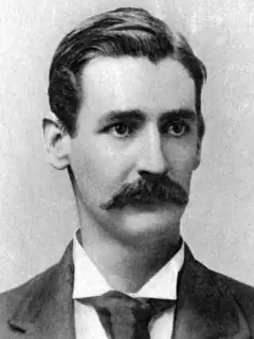
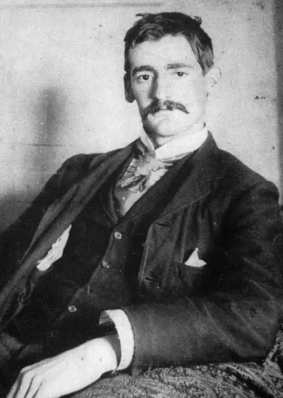

Лоусон Генрі Арчибалд (Lawson, Henry Archibald — 17.06.1867, Гренфелл, Новий Південний Уельс — 2.09.1922, Сідней) — австралійський письменник.Класик австралійської літератури, Лоусон був сином норвезького моряка, іммігранта, привабленого в Австралію "золотою лихоманкою" 50-х pp. XIX ст. Його матір — Луїза Лоусон. (1848—1920), письменниця, феміністка. Лоусон навчався у сільській школі. Працював малярем, учителем у школі для маорі у Новій Зеландії, клерком. Почав із віршів, а потім спробував сили в нарисах і оповіданнях. У 90-х pp. він почав публікуватися у провінційній пресі в Австралії. 1894 р. вийшла його збірка "Оповідання у прозі та віршах" — перша спроба зображення життя переселенців з Європи, котрі з кінця ХУ1П ст. почали заповнювати австралійські простори в пошуках прихистку та роботи. Ці люди назавжди залишилися героями творів Лоусона, котрого надзвичайно любили сучасники, і який сьогодні залишається одним із найвизначніших, справді народних письменників Австралії. Кращі його оповідання, що увійшли до збірок "Поки закипає казанок" ("While the Billy Boils", 1896), "На дорогах і за огорожами" ("On the Track", 1900), "Джо Вільсон і його товариші" ("Joe Wilson and His Mates", 1901) та ін., правдиво та без прикрас передають важке життя "маленької людини": золотошукача, шахтаря, фермера, погонича худоби, мандрівного наймита. Віра в духовні можливості людини, в силу товариської солідарності ніколи не полишає Л., тому його оповідання, що нерідко мають трагічний кінець, не залишають відчуття безнадії. Чуйність, великодушність, незмінна готовність виручити в біді, пустотливий, насмішкуватий гумор — ці якості характерні для зображених Лоусоном бідняків і допомагають їм витримати злигодні та горе. Пише Лоусон скупо і просто, утримуючись від авторських коментарів, дозволяючи героям самим характеризувати себе живою, яскравою народною мовою.
Творча манера Лоусона формувалася під безпосереднім впливом книг Ф. Брет Гарта і Ч. Діккенса. Контрасти злиднів і розкоші, сплав гумору і патетики, сатиричний гротеск, іронічний перифраз завершуються силою заключного акорду, в якому звучить торжество добра. З дитинства у пам'ять Лоусона запали десятки бувальщин і небилиць, почутих від золотошукачів, погоничів волів, волоцюг, з типовими інтонаціями, ритмом, повторами. Австралійська новелістика XIX ст. увібрала культуру фольклорного оповідання. Основним матеріалом Лоусону послужили враження дитинства і юності: поїздка 1892 р. у Буш, у райони, охоплені страйками; життя у Новій Зеландії, де австралійці шукали порятунку від безробіття.
У прозі Лоусона відкривається панорама сільської Австралії — містечка, де цивілізацію репрезентують пошта і корчма, загублені ферми, стригальні. Колізії оповідань про фабричного хлопчика Ерві Еспінолла та його матір, багатостраждальну поденницю ("Джонсова безвихідь", "Будильник Ерві Еспінолла", "Білл і Арві з заводу братів Ґрайндер"), підказані великим індустріальним містом. Хлопчик, змушений бути годувальником родини, страшенно боїться запізнитися на роботу і, навіть помираючи, тривожиться, щоби не проспати дзвінок будильника. Іронія оповідання полягає в тому, що будильник — подарунок доньки фабриканта. Трудівник, котрий звершує свій непримітний життєвий подвиг, в очах Лоусона — істинний герой, навіть якщо він зазнає поразки. Акцентується мужність і стійкість у боротьбі з негараздами і тим самим великі можливості людини з народу. У системі моральних і соціальних цінностей Лоусона на першому плані — товариськість. Умови життя — переходи через пустелю, артільна розробка золотоносної ділянки, боротьба зі стихіями — змушували австралійця особливо цінувати підтримку, відданість, безкорисливо простягнуту руку допомоги. Безрадісна доля мешканців тогочасного міста. Бруд, злидні, натовпи обдертих безробітних — усе це Лоусон бачив особисто у Сіднеї та в інших містах Австралії. "Нема гіршої тюрми для бідної людини, аніж місто", — говорить він у своєму невеликому нарисі "Нічліг на вулиці і стояння в дорозі". Перед читачем виникає вражаюча картина: бруд лахміття на тротуарі — це позбавлені даху безробітні, що влаштовуються на нічліг. Прикрившись брудною газетою, вони ненадовго поринуть у важкий, неспокійний сон, а ледь займеться світанок, з'явиться поліцейський і, розштовхавши їх чоботом, прожене геть. Лоусон — майстер малої форми, котрий умів дати яскравий нарис характеру, наблизився до жанру роману у своєму циклі з чотирьох невеликих повістей про Джо Вільсона. Фермер Джо Вільсон розповідає про своє життя, шкодуючи про помилки молодості і втрачену чистоту почуттів. Кожна з цих повістей зосереджена на психологічно значущих, навіть критичних моментах і періодах. У "Сватанні Джо Вільсона" — юнацьке кохання, перипетії залицяння і сватання. У "Своячці Брайтона" — муки батька, коли далеко від житла, в дорозі, важко захворів трирічний син. У повістях "Підлийте герані" та. "Нова бричка на Лехі Крик "Джо й Мері показані у шлюбі: краса та поезія руйнуються під впливом невдач, матеріальних клопотів, нелегкого побуту. Демократичний характер творчості Лоусона проявляється не лише в тематиці його творів, а й у мові письменника. Для Лоусона чуже замилування формою. Мова його творів надзвичайно проста, лаконічна, йому не властиві які-небудь стилістичні надмірності. У самій простоті мови, у скупості мовних засобів полягає глибокий сенс і велика художня виразність. Більшість оповідань Лоусона звучать так, ніби їх розповідає простий "веґмен", сидячи біля багаття, на якому гріється похідний жерстяний казанок. Оповідання Лоусона мають значну художню та пізнавальну цінність. Прочитавши їх, читач ознайомиться з життям і побутом австралійського народу, з його національними звичаями і традиціями, які, всупереч всьому, живуть у народі, дорогі серцю простих людей, про яких з такою любов'ю писав Лоусон.